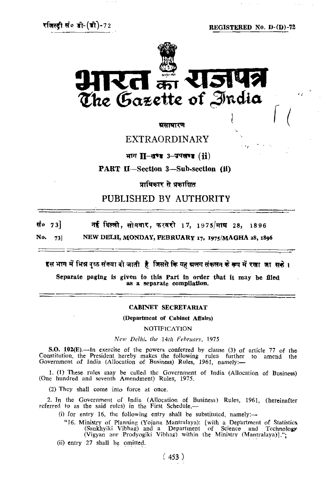
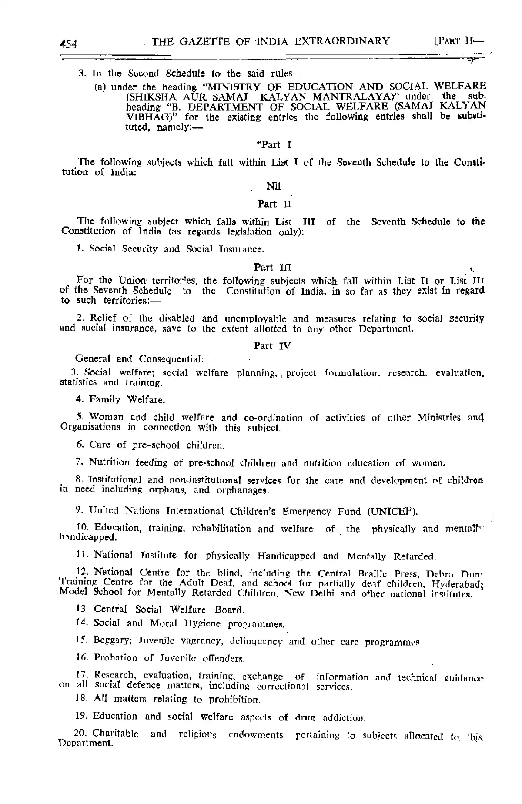
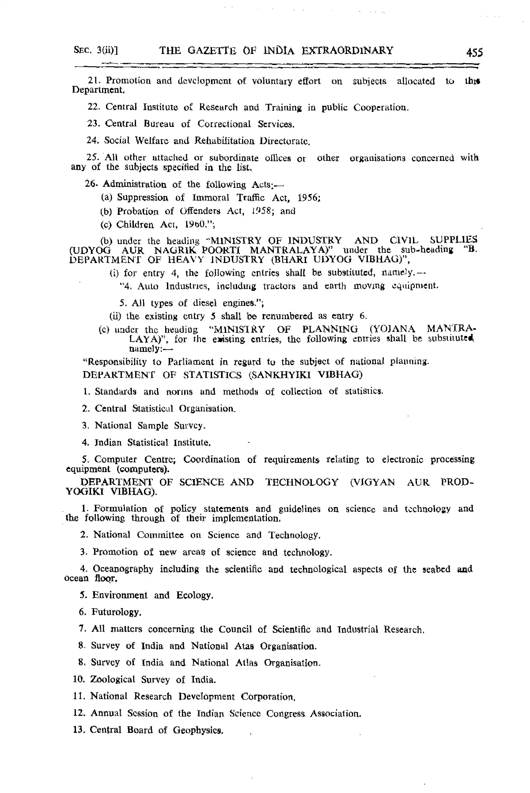
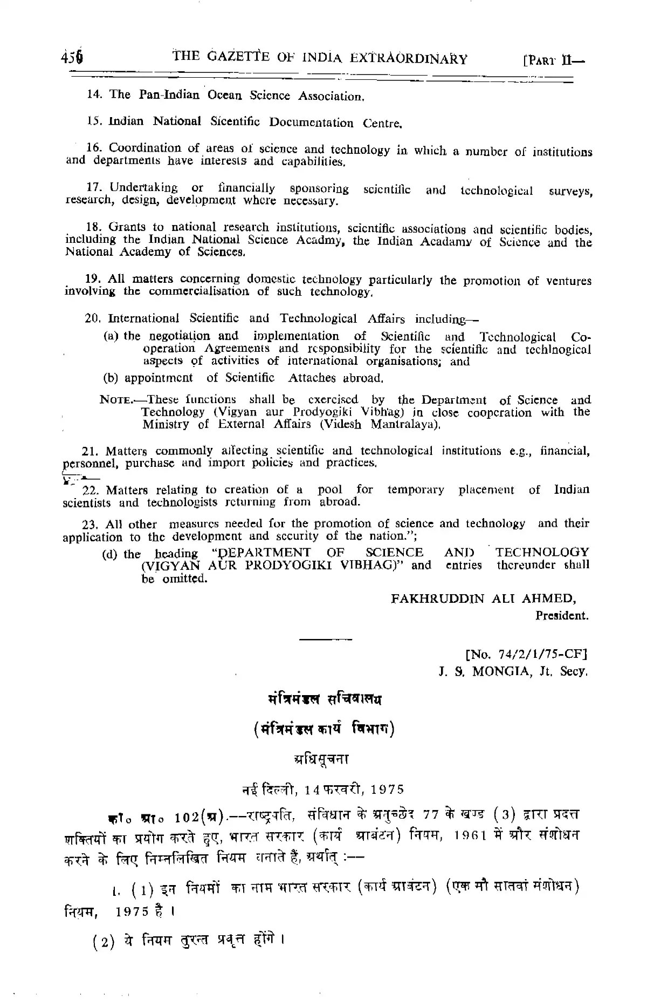
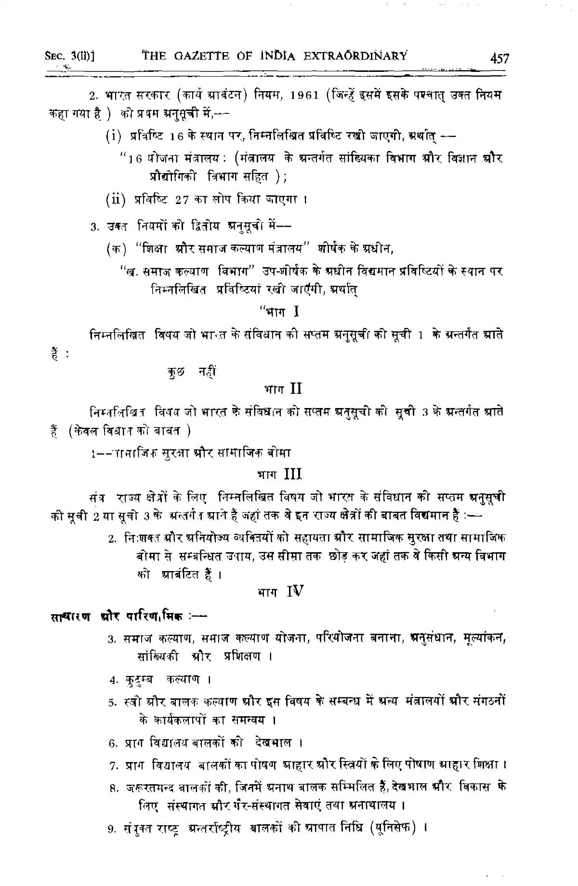
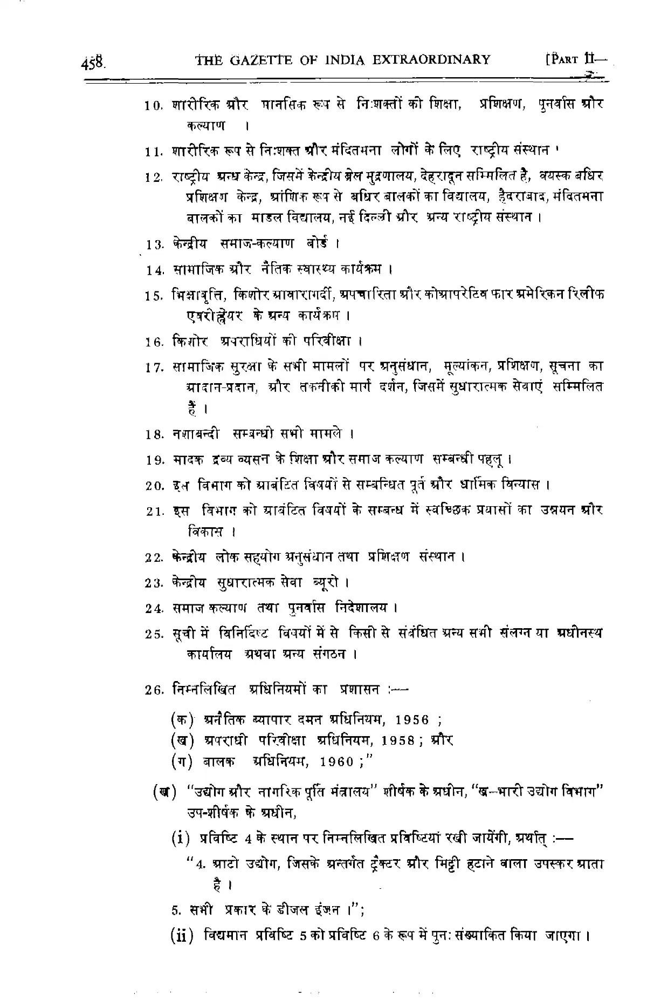
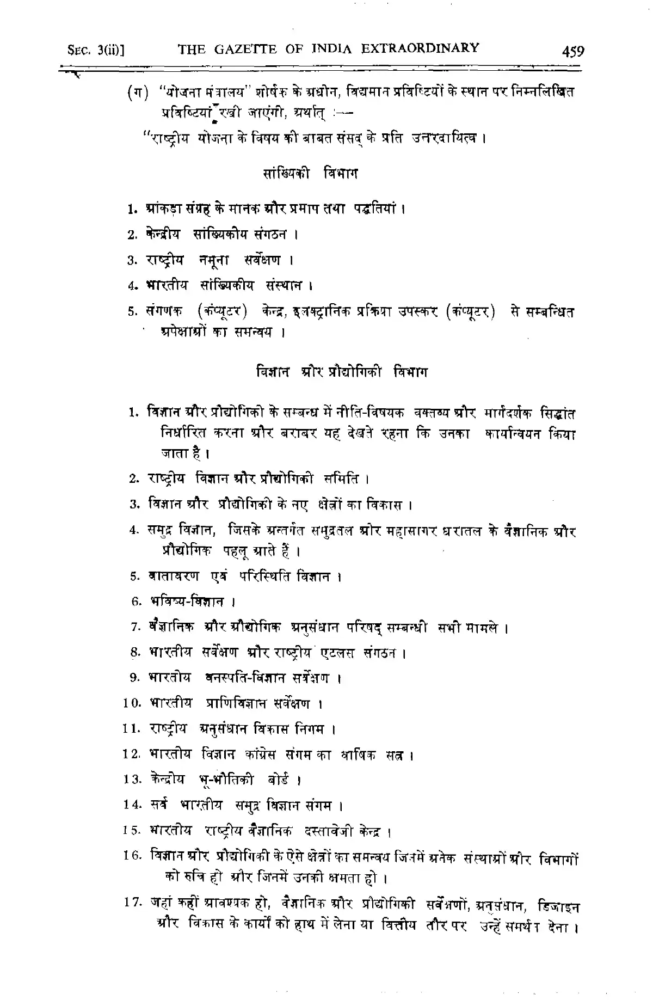
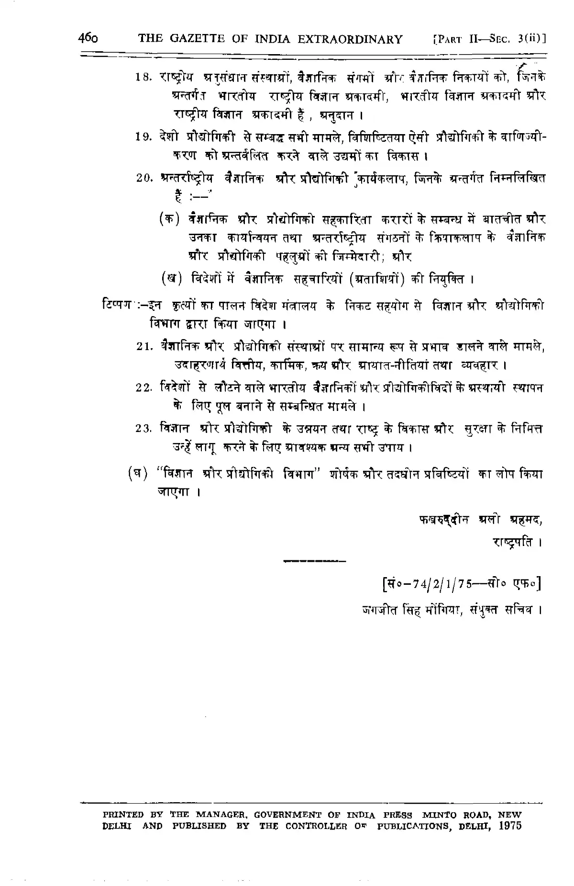

Amendment #107 (S.O. 102(E), 1975)
7 changes: 2 to the First Schedule, 5 to the Second Schedule. 5 applied2 not applied
What it did to the ministries
- absorbedDepartment of Science and Technology joins Ministry of Planning (0 → 28) change 1, 2, 6, 7 · histories: Science and Technology, Planning and Programme Implementation
- grewMinistry of Education and Social Welfare grows from 61 to 75 subjects change 3 · histories: Education and Social Welfare
The order, page by page
Page 1 of 8

12Schedule 1 › entry 16
- 16. Ministry of Planning
- -. Department of Statistics
- -. Department of Science and Technology
applied at schedule 1 › ministry 16 in the Rules after #107
Schedule 1 › entry 27
applied at schedule 1 › department 27 in the Rules after #107
Page 2 of 8

3Schedule 2 › MINISTRY OF EDUCATION AND SOCIAL WELFARE › DEPARTMENT OF SOCIAL WELFARE
- Part I The following subjects which fall within List I of the Soventh Schedule to the Constitution of India: Nil Part II The following subject which falls within List III of the Seventh Schedule to the Constitution of India (as regards legislation only):
- 1. Social Security and Social Insurance.
- III. PART III
- 2. Relief of the disabled and unemployable and measures relating to social security and social insurance, save to the extent allotted to any other Department.
- IV. PART IV
- 3. Social welfare; social welfare planning, project formulation. research. evaluation statistics and training.
and 26 more
- 4. Family Welfare.
- 5. Woman and child welfare and co-ordination of activities of other Ministries and Organisations in connection with this subject.
- 6. Care of pre-school children.
- 7. Nutrition feeding of pre-school children and nutrition education of women.
- 8. Institutional and non-institutional services for the care and development of children in need including orphans, and orphanages.
- 9. United Nations International Children's Emergency Fund (UNICEF).
- 10. Education, training, rehabilitation and welfare of the physically and mentall handicapped.
- 11. National Institute for physically Handicapped and Mentally Retarded.
- 12. National Centre for the blind, including the Central Braille Press, Dehra Dun: Training Centre for the Adult Deaf, and school for partially deaf children, Hyderabad Model School for Mentally Retarded Children, New Delhi and other national institutes.
- 13. Central Social Welfare Board.
- 14. Social and Moral Hygiene programmes.
- 15. Beggary; Juvenile vagrancy, delinquency and other care programmes
- 16. Probation of Juvenile offenders.
- 17. Research, evaluation, training, exchange of information and technical guidance on all social defence matters, including correctional services.
- 18. All matters relating to prohibition.
- 19. Education and social welfare aspects of drug addiction.
- 20. Charitable and religious endowments pertaining to subjects allocated to this Department.
- 21. Promotion and development of voluntary effort on subjects allocated to the Department.
- 22. Central Institute of Research and Training in public Cooperation.
- 23. Central Bureau of Correctional Services.
- 24. Social Welfare and Rehabilitation Directorate.
- 25. All other attached or subordinate offices or other organisations concerned with any of the subjects specified in the list.
- 26. Administration of the following Acts:—
- a. Suppression of Immoral Traffic Act, 1956
- b. Probation of Offenders Act, 1958; and
- c. Children Act, 1960.
applied at schedule 2 › ministry MINISTRY OF EDUCATION AND SOCIAL WELFARE › department B in the Rules after #107
read page break
Page 3 of 8

456Schedule 2 › MINISTRY OF INDUSTRY AND CIVIL SUPPLIES › DEPARTMENT OF HEAVY INDUSTRY › entry 4
- 4. Auto Industries, including tractors and earth moving equipment.
- 5. All types of diesel engines.
not applied (the change could not be placed in the Rules as read; see How this document was read)
Schedule 2 › MINISTRY OF INDUSTRY AND CIVIL SUPPLIES › DEPARTMENT OF HEAVY INDUSTRY › entry 5
renumbered as 6
not applied (the change could not be placed in the Rules as read; see How this document was read)
Schedule 2 › MINISTRY OF PLANNING
- Responsibility to Parliament in regard to the subject of national planning.
- DEPARTMENT OF STATISTICS
- 1. Standards and norms and methods of collection of statistics.
- 2. Central Statistical Organisation.
- 3. National Sample Survey.
- 4. Indian Statistical Institute.
and 28 more
- 5. Computer Centre; Coordination of requirements relating to electronic processing equipment (computers).
- DEPARTMENT OF SCIENCE AND TECHNOLOGY
- 1. Formulation of policy statements and guidelines on science and technology and the following through of their implementation.
- 2. National Committee on Science and Technology.
- 3. Promotion of new areas of science and technology.
- 4. Oceanography including the scientific and technological aspects of the seabed and ocean floor.
- 5. Environment and Ecology.
- 6. Futurology.
- 7. All matters concerning the Council of Scientific and Industrial Research.
- 8. Survey of India and National Atas Organisation.
- 9. Survey of India and National Atlas Organisation.
- 10. Zoological Survey of India.
- 11. National Research Development Corporation
- 12. Annual Session of the Indian Science Congress Association.
- 13. Central Board of Geophysics.
- 14. The Pan-Indian Ocean Science Association.
- 15. Indian National Sicentific Documentation Centre.
- 16. Coordination of areas of science and technology in which a number of institutions and departments have interests and capabilities.
- 17. Undertaking or financially sponsoring scientific and technological surveys research, design, development where necessary.
- 18. Grants to national research institutions, scientific associations and scientific bodies including the Indian National Science Acadmy, the Indian Acadamy of Science and the National Academy of Sciences.
- 19. All matters concerning domestic technology particularly the promotion of ventures involving the commercialisation of such technology.
- 20. International Scientific and Technological Affairs including-
- a. the negotiation and implementation of Scientific and Technological Cooperation Agreements and responsibility for the scientific and techlnogical aspects of activities of international organisations; and
- b. appointment of Scientific Attaches abroad.
- NOTE. These functions shall be exercised by the Department of Science and Technology (Vigyan aur Prodyogiki Vibhag) in close cooperation with the Ministry of External Affairs (Videsh Mantralaya).
- 21. Matters commonly affecting scientific and technological institutions e.g., financial personnel, purchase and import policies and practices.
- 22. Matters relating to creation of a pool for temporary placement of Indian scientists and technologists returning from abroad.
- 23. All other measures needed for the promotion of science and technology and their application to the development and security of the nation.
applied at schedule 2 › ministry MINISTRY OF PLANNING in the Rules after #107
read page break
Page 4 of 8

7Schedule 2 › DEPARTMENT OF SCIENCE AND TECHNOLOGY
applied at schedule 2 › department in the Rules after #107
Page 5 of 8

Page 6 of 8

Page 7 of 8

Page 8 of 8

How this document was read
Edits to the reading
| Date | By | Edit | Before → after |
|---|---|---|---|
| 14 November 2026 | mukundesh | word corrected |
Known issues
| Change | Issue | Known as |
|---|---|---|
| 4 | change 4: 2 parts are entry 4 under schedule 2 › ministry MINISTRY OF INDUSTRY AND CIVIL SUPPLIES › department B | A number twice |
| 5 | change 5: 2 parts are entry 5 under schedule 2 › ministry MINISTRY OF INDUSTRY AND CIVIL SUPPLIES › department B | A number twice |
From the Government of India (Allocation of Business) Rules, 1961 and their amendments, as published by the Cabinet Secretariat (cabsec.gov.in), read by orgpedia. The readings of the older scanned gazettes have known gaps.